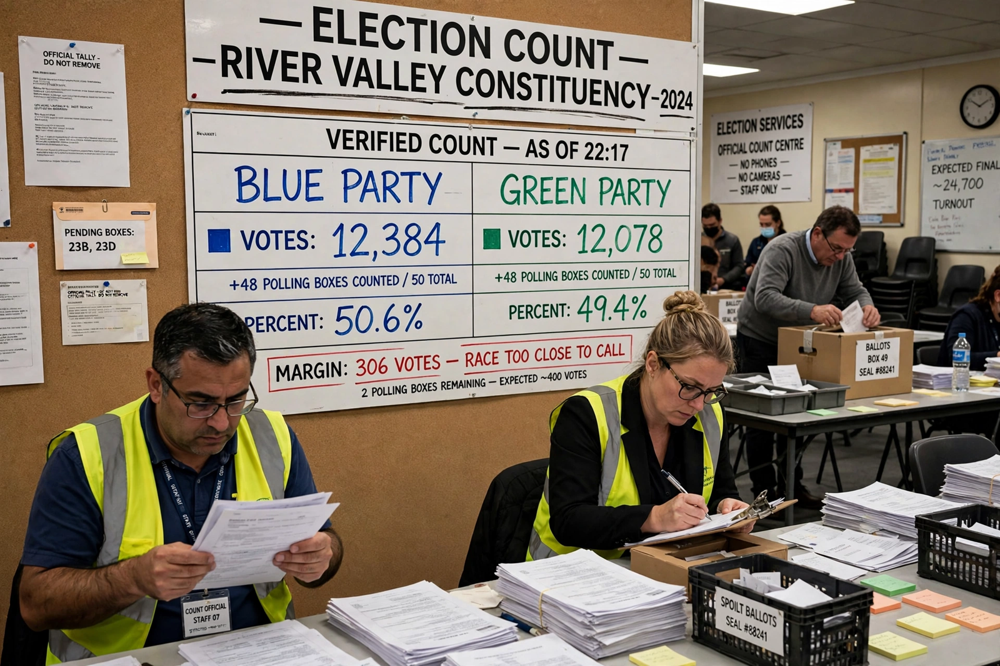

Marginal seat
From Wikipedia, the free encyclopedia

A marginal seat (in the United States, a swing seat or purple district) is an electoral district won by a small margin, vulnerable to changing hands at the next election. In British usage a seat held by under about 5–10% is considered marginal; safe seats, by contrast, reliably return the same party for decades. Marginal seats receive disproportionate campaign spending, candidate visits and policy attention.
Measurement
Marginality is measured by the incumbent's majority — in votes or percentage points — over the runner-up, and by 'target seat' rankings published by parties and media. In two-party contests the required swing is half the percentage margin. Demographic change, boundary reviews and by-elections continually redraw the marginal map; in the UK, seats like those in the former 'Red Wall' moved from safe to marginal (and back) within a decade.
Effects
Because plurality elections are decided in marginals, governments target them with spending promises and flagship policies ('Pork barrel' politics), while most voters in safe seats are comparatively ignored — a central argument of Electoral reform campaigners. Parties allocate their best organisers and ground campaigns to marginals; opinion polls oversample them ('battleground' states in US presidential elections play the analogous role under the Electoral College).
Safe seats and competition
The growth of safe seats — through geographic sorting and, in the US, Gerrymandering — means many elections are effectively decided in party primaries, with consequences for polarisation. Remedies proposed include competitive redistricting commissions and proportional electoral systems, in which the marginal-seat concept dissolves.